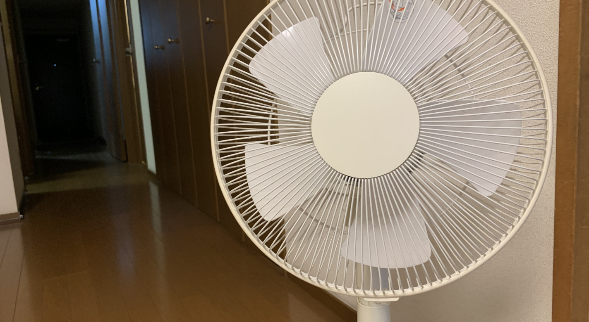

照明の電気代を節約する方法
まず前提として、電気を無駄につかってしまった製品を同じ大学生約100名にアンケートした所、照明が75％、エアコン57％無駄遣いしていると回答。
そのためこの記事では照明、エアコンの電力削減に関するお得な情報を掲載します。
1．照明の電力削減方法
照明の電気代を節約する方法は様々あります。その中で簡単にできることをいくつか紹介します。
まず省エネ効果が最も高いものとしてLED照明が挙げられます。白熱電球をLED照明に交換するだけで、約85％の電気代の削減が期待できます。またLED照明には電気代が削減できるだけではなく様々なメリットがあります。1つ目は非常に長寿命であるという点です。一般的な白熱電球の寿命は約1000時間、蛍光ランプが約6000時間から13000時間であるのに対し、LED照明は約40000時間で圧倒的に長く使うことができます。LED照明は長寿命であることからランプ交換の手間が省けるといったメリットもあります。2つ目は熱や紫外線を含まないため、光で物を傷める心配がないという点です。LED照明を使うことで写真などが色あせしにくくなります。また虫が集まりにくくなったり、熱を持たないことからエネルギー効率がよくやけどの心配がないというメリットもあります。
他にも少しの工夫で省エネ効果を期待できる方法があります。例えば主電源をオフにするだけでも省エネ効果が期待できます。リモコンで電源をオフにすると待機中に電力を消費するため、主電源をオフにすることで電力の節約になります。また照明器具のカバーを掃除することでも省エネ効果が期待できます。カバーを1年間掃除しなかった場合明るさは約20％減少します。他にも古くなり劣化した照明器具を新しいものに交換することでも省エネにつながります。